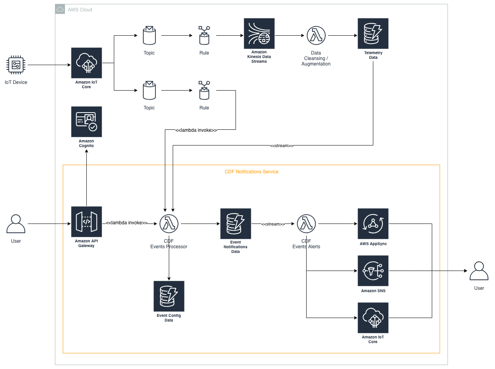
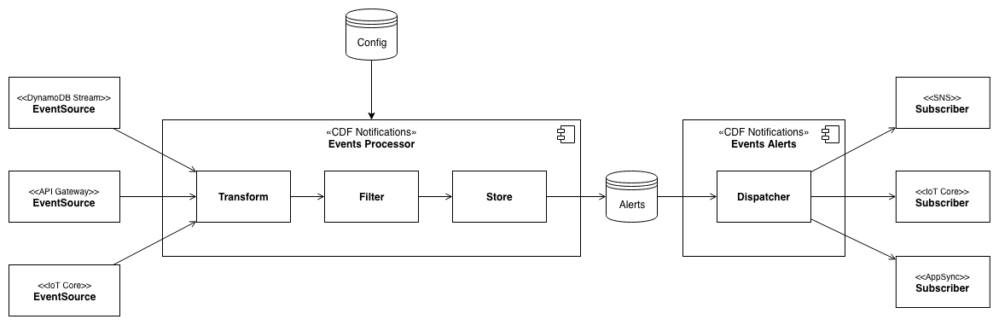
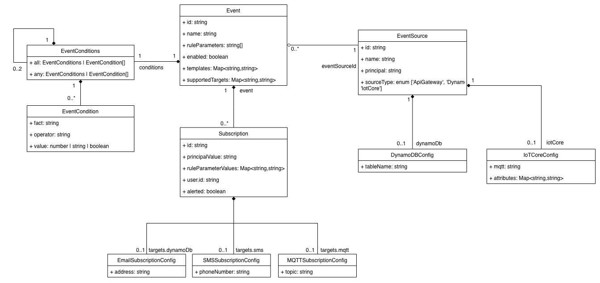

NOTIFICATIONS: Design¶
The CDF Notifications service is comprised of 2 micro-services: the CDF Events Processor, and the CDF Events Alerts.
High Level Architecture¶

Processing Pipeline¶

Events Processor¶
The Events Processor module is responsible for receiving events from external data sources, transforming to a common message format, filtering based on configured subscriptions, and finally storing the generated alerts for later forwarding by the Events Alerts module.
The Events Processor is implemented as a fat lambda, exposing a management REST API, along with multiple Lambda handler entry points for DynamoDB Stream triggers, and direct Lambda invocations.
Event definitions are defined which are comprised of the data sources to monitor, and the rule to apply. Subscribers then create subscriptions for specific events occurring. An example domain model:

API¶
The following REST API endpoints are exposed to configure events sources, events, and to allow user's to manage their subscriptions:
For a full definition of the endpoint including a description of the parameters, request and response bodies, and examples, refer to the swagger definition.
| Endpoint | Description |
|---|---|
POST /eventsources |
Creates a new event source, both the integration itself and its metadata |
GET /eventsources |
List all event sources |
GET /eventsources/{eventsourceId} |
Returns a specific event source |
DELETE /eventsources/{eventsourceId} |
Deletes a specific event source, along with all its associated events and subscriptions |
POST /eventsources/{eventSourceId}/events |
Defines a new event |
GET /eventsources/{eventSourceId}/events |
Lists all events for a specific event source |
GET /events/{eventId} |
Returns a specific event |
DELETE /events/{eventId} |
Deletes an specific event, along with all its related subscriptions |
POST /events/{eventId}/subscriptions |
Subscribes to an event |
GET /events/{eventId}/subscriptions |
Lists all subscriptions for a specific event |
GET /subscriptions/{subscriptionId} |
Returns a specific event |
GET /user/{userId}/subscriptions |
Lists all subscriptions for a user |
Event Sources¶
The following event sources are supported:
- DynamoDB stream
- IoT Core (Lambda Invoke via IoT Rule)
The following are planned to be suported:
- API Gateway
All incoming events must contain an eventSourceId that can be used to match against a configured EventSource eventSourceId. If a matching EventSource configuration cannot be found, the event is dropped.
Events that are sourced via direct lambda invocation, such as API Gateway or IoT Core, are expected to be in the common event format, whereas events sourced from DynamoDB Streams are converted to the common message format by the Event Processor.
DynamoDB Streams¶
A DynamoDB Stream may be configured as a trigger to the Events Processor service.
Using DynamoDB streams as a Lambda trigger instead of consuming the DynamoDB Stream via Kinesis was chosen so that we benefit from automatic shard handling of scaling up/down.
Creating a DynamoDB Stream event source via the REST API will enable the stream if it is not already enabled on the table, whereas deleting the event source via the REST API will not disable the stream on the table incase since enabling, an external consumer has started consuming the stream.
The eventSourceARN in the incoming lambda event from the DynamoDB Stream trigger is used to determine which events are subject to processing by extracting the table portion of the Arn and matching it to an EventSourceby its eventSourceId.
- Example eventSourceARN: a
rn:aws:dynamodb:us-west-2:{account-id}:table/ExampleTableWithStream/stream/2015-06-27T00:48:05.899 - Corresponding eventSourceId:
arn:aws:dynamodb:us-west-2:{account-id}:table/ExampleTableWithStream
The items primary key, sort key, and attributes, are extracted from the NewImage section of the event and transformed into the common event format for filtering.
IoT Core¶
Creating an IoT Core event source via the REST API creates an IoT Rule to forward the event message. Deleting via the REST API will remove the IoT Rule.
It is expected that the incoming event being forwarded from IoT Core (via an IoT Rule) is already in the common event format (defined as part of the IoT Rule SQL), therefore will not need transforming.
Event Filtering¶
Takes as input an event of the common event format. First performs a lookup to see if any subscriptions for the event are configured for the event source, principal and principal value. If subscriptions are configured, then a ruleset specific for the principal is loaded. If any of the subscription rules for the principal pass, and the subscription has not been alerted, the event alert is stored in DynamoDB for later dispatching by the Events Alerts module. If the subscription rules for the principal do not pass, and the subscription had been alerted, the alerted flag is reset.
Common Event Format¶
The principal represents the object that is the focus of the event message. As an example, it could be the thing name or device id if the event message originated from a device, or a User Id if it originated directly from a user.
interface CommonEvent {
eventSourceId: string;
principal: string;
principalValue: string;
attributes?: { [key: string] : string|boolean|number|string[]|number[] };
}
Rule Conditions¶
Each rule requires a its conditions to be defined.
A condition comprises of a fact (the attribute to check), an operator(e.g. LessThan), and a value. In addition, multiple conditions may be defined within all or any constructs.
Data Store¶
As this module is executed against telemetry, performance is critical, therefore DynamoDB is used as the datastore. DynamoDB BatchGetItem and BatchWriteItem methods are used where possible to increase performance.
The following tables exist:
- EventConfig - utilizes the Adjacency List Pattern, GSI Overloading and GSI Sharding best practices to store
Event,EventSourceandSubscriptioninformation. As the data access is read heavy, DynamoDB Accelerator DAX is enabled to improve read performance. - EventNotifications - stores all processed alerts. Streams the creation of new alerts to the Events Alerts modules.
EventConfig Data Access Patterns¶
| Access Pattern | Query | Result |
|---|---|---|
| Find an EventSource by its id | Use table, PK="ES:{eventSourceId}", SK="type:ES" | EventSource |
| List all EventSource's | Use sk-gsi1Sort-index, PK="type:ES" | Multiple EventSources |
| List all active EventSource's | Use sk-gsi1Sort-index, PK="type:ES", SK begins_with "ES:true:" | Multiple EventSources |
| Find an Event by its id | Use sk-gsi1Sort-index, PK="E:{eventId}", SK begins_with "E:{eventId}:" | Multiple Events including denormalized EventSource info |
| List all Event's | Use sk-gsi1Sort-index, PK="type:E" | Multiple Events |
| List all active Event's | Use sk-gsi1Sort-index, PK="type:E", SK beings_with "E:true:" | Multiple Events |
| List all Events of a given EventSource | Use table, PK="ES:{eventSourceId}", SK begins_with "E:" | Multiple Events including denormalized EventSource info |
| Find a Subscription by id | Use table, PK="S:{subscriptionId}", SK="S:{subscriptionId}" | Subscription |
| List all Subscriptions for an Event | Use sk-gsi1Sort-index, PK="E:{eventId}", SK begins_with "S:" | Multiple Subscriptions |
| List all Subscriptions for an Event | Use sk-gsi1Sort-index, PK="E:{eventId}", SK begins_with "S:" | Multiple Subscriptions |
| List all Subscriptions for a User | Use sk-gsi1Sort-index, PK="U:{userId1}", SK begins_with "S:" | Multiple Subscriptions |
| For an incoming message from an event source, retrieve the rule definitions (Event) and all rule parameter values (Subscriptions) to determine if an event message needs alerting | Use sk-gsi1Sort-index, PK="ES:{eventSourceId}:{principal}:{principalValue}" | Multiple Subscriptions including denormalized Event info |
EventNotifications Data Access Patterns¶
| Access Pattern | Query | Result |
|---|---|---|
| Stream all notifications for a user | Use userId-time-index, PK="{userId}" | Multiple Alerts |
| Stream all notifications for a user for a specific date range | Use userId-time-index, PK="{userId}", SK BETWEEN "{dateFrom}" and "{dateTo}" | Multiple Alerts |
| Stream notifications of a particular event for a user | Use userId-gsi2Sort-index, PK="{userId}", SK begins_with "E-{eventId1}-" | Multiple Alerts |
| Stream notifications of a particular event for a user for a specific date range | Use userId-gsi2Sort-index, PK="{userId}", SK BETWEEN "E-{eventId1}-{dateFrom}" and "E-{eventId1}-{dateTo}" | Multiple Alerts |
Events Alerts¶
The Events Alerts module is responsible for notifying subscribers of generated alerts which are received by a DynamoDB Stream on the EventNotifications table that is populated by the Event Processor. Notifications may be pushed to SNS or IoT Core, or alternatively queried in real-time via AppSync (planned feature).